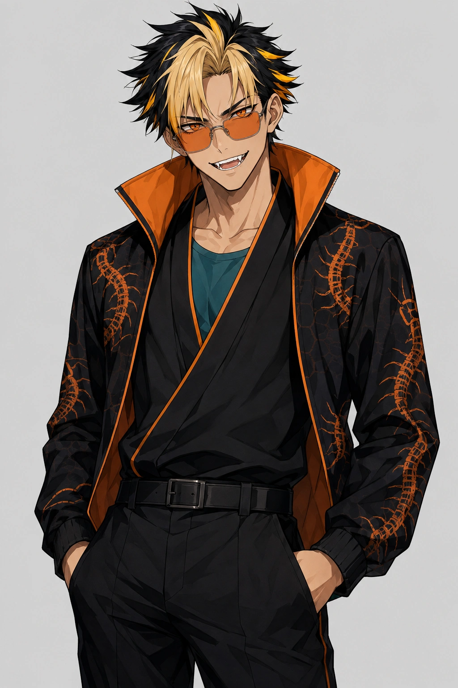

アースキー | 現役病院薬剤師 × AIクリエイター
同じキャラが、毎回ちがう顔で出てくる理由
2年半かけて CryptoNinja 47人ぶんの外見を言葉にしてきて、崩れる原因はほとんど同じ3つでした。実例つきで置いておきます。ゴコウのプロンプト全文もこのページにあります。
毎回おなじ顔で出すための、3つの決め事
どれもAIの性能ではなく、渡す言葉の側の問題でした。
-
1. 「書いてあるけれど、決まっていない」言葉をなくす
いちばん多い原因です。書いてあるのに毎回変わるなら、その言葉はまだ何も決めていません。
片目に眼帯 → どちらの目か決まっていない。生成のたびに左右が入れ替わります。
見ている人から見て右の目に眼帯 → ここまで書くと、以後ずれません。
-
2. 雰囲気の言葉を入れない
それらしくなる気がして足したくなりますが、雰囲気の言葉は絵柄そのものを引っぱります。同じキャラなのに毎回ちがうタッチで出てくるときは、たいていこれが原因です。
sleek assassin silhouette → 画風のほうが動いてしまう。
目に見える特徴だけを書く → 髪の色、目の色、服の形。見えるものだけにします。
-
3. 同じ説明を2か所に置かない
正本が2つあると、片方だけ直したときに真逆の記述が並びます。気づかないまま使い続けることになるので、キャラの外見を書く場所は1か所に決めるのが安全です。
この3つは、キャラクターに限りません。毎回すこしずつ違うものが出てくる作業を持っている人なら、渡している言葉のどこかがまだ決まっていないだけです。
ゴコウのプロンプト（Xに載せたものと同じです）
ChatGPT や Gemini など、画像を作れるAIの入力欄にそのまま貼ってください。参照画像は要りません。
1boy, male focus, young man, sharp eyes, orange eyes, orange-tinted eyewear, sunglasses, sharp teeth, fangs, spiky hair, short_hair, multicolored hair, black hair, blonde hair, center-parted hair, blonde bangs, black side hair, yellow streaked hair, messy hair, spiky black hair, black outfit, black jacket, open jacket, high collar, orange inner collar, orange trim, patterned jacket, centipede pattern, insect motif, black kimono, teal inner shirt, black pants, belt, streetwear,

うまく出ないときは、日本語で「アニメ塗りで」「上半身だけ」のように足したい条件を後ろに書き足すと通ります。 並べ替えたり途中の語を消したりすると崩れやすくなるので、足すのは末尾にしてください。
ほかのキャラクターも言葉で持っておきたい方へ
同じ形式で、CryptoNinja 47人ぶんの外見を言葉にした辞書を教材にまとめています。 公式サイトにまだ載っていないキャラクターも含めて、参照画像なしで再現できます。
Brain（外部サイト）へ移動します。自分の商品への広告リンクです。
ゴコウは、NinjaDAOの『CryptoNinja』というキャラクターのひとりです。根の国の忍で、百足（ムカデ）をモチーフにしています。ファンとしてお借りして作りました。
本ページはファンメイドの内容です。CryptoNinjaはNinjaDAOのキャラクターであり、本ページは公式ガイドラインの範囲で制作した非公式の二次創作です。